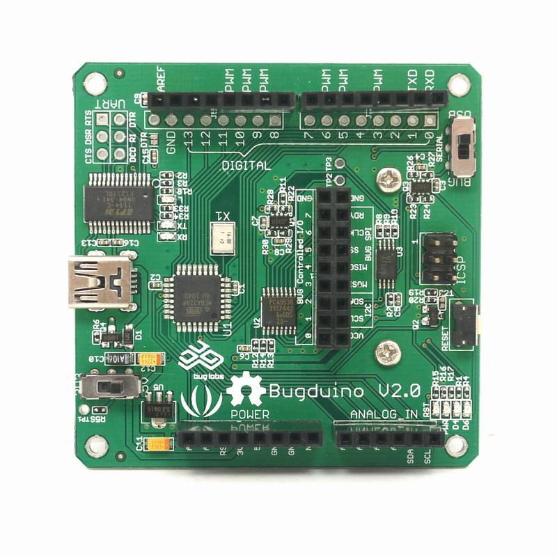

Bugduino is an Arduino compatible module.
Designed for working with Buglabs BUG platform.

The warnings and wrong operations possible cause dangerous.
| Microprocessor | Atmega328 |
|---|---|
| PCB size | 60.2cm x 60.2cm |
| Indicators | POWER,Green LED. LEDs for Txd, Rxd, Rst |
| Power supply | 5V DC |
| Interface | Mini-B USB, 2.54mm pitch pin header |
| Connectivity | USB |
| Communication Protocol | UART, Bit Bang I/O, SPI, I2C |
| ROHS | YES |
60.2mm * 60.2mm * 20.5mm
#include <Wire.h> //SLOTS: Vendor: 0x02 //SLOTS: Product 0x10 //SLOTS: Revision 0x20 //A0-->GND, A1-->GND, A2-->GND #define AT24C02B_Addr 0b1010000 unsigned char bugduino_signature[]= { 0x00,0x00,0x02,0x00,0x10,0x00,0x00,0x00,0x00,0x00,0x00,0x00,0x00,0x00,0x0b,0x16,0x00,0x00,0x00,0x0f }; unsigned char address_map[]= { 0,1,2,3,4,5,6,7,8,9,10,11,12,13,14,15,16,17,18,0x7f }; void setup() { Wire.begin(); Serial.begin(38400); } void loop() { /* */ unsigned char i = 0; unsigned char eeprom = 0; for(i=0;i<20;i++) { Wire.beginTransmission(AT24C02B_Addr); //start Wire.send(address_map[i]); Wire.endTransmission(); //stop Wire.requestFrom(AT24C02B_Addr, 1); // request delay(1); while(Wire.available()) // slave may send less than requested { unsigned char c = Wire.receive(); // receive a byte as character if(c != bugduino_signature[i]) { eeprom =1; } } } delay(100); if(eeprom) { Serial.println("Write Signature"); for(i=0;i<20;i++) { Wire.beginTransmission(AT24C02B_Addr); //start Wire.send(address_map[i]); Wire.send(bugduino_signature[i]); Wire.endTransmission(); //stop delay(10); } } else { Serial.println("Signature OK"); } for(;;); }
The projects and application examples.
All the components used to produce the product.
If you have questions or other better design ideas, you can go to our forum or wish to discuss.
| Revision | Descriptions | Release |
|---|---|---|
| v2.0 | new release | Nov 15, 2010 |
Bug Tracker is the place you can publish any bugs you think you might have found during use. Please write down what you have to say, your answers will help us improve our products.
The Additional Idea is the place to write your project ideas about this product, or other usages you've found. Or you can write them on Projects page.
This documentation is licensed under the Creative Commons Attribution-ShareAlike License 3.0 Source code and libraries are licensed under GPL/LGPL, see source code files for details.
Links to external webpages which provide more application ideas, documents/datasheet or software libraries
Copyright (c) 2008-2016 Seeed Development Limited (www.seeedstudio.com / www.seeed.cc)